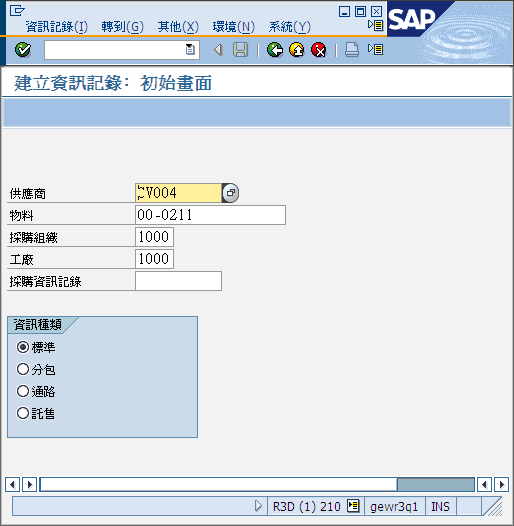
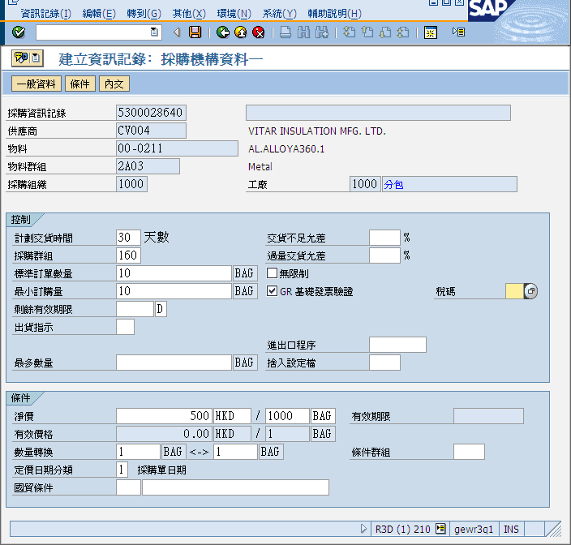

引言
如果你想輸入單價，就必須維護購買資訊記錄 (Purchase Info Record)，購買資訊記錄記載以下資料：單價、最少購買數量、購買單位等等資料。以下3項都是維護購買資訊記錄的T-Code：
- ME11 – 建立購買資訊記錄
- ME12 – 更改購買資訊記錄
- ME13 – 顯示購買資訊記錄
本文將會講述如何建立購買資訊記錄。舉一個例子，供應商CV004對物料00-0211報價，此項物料以一包100公斤為包裝，1000包價錢值$500 HKD，在公廠1000購買，現在需要為此物料報價。
前提
輸入單價前你必須確定已完成以下步驟：
- 維護物料
- 維護供應商
建立購買資訊記錄
輸入以下資料：
- 供應商，例如CV004
- 物料，例如00-0211
- 採購組織，例如1000
- 工廠，例如1000
- 資訊種類，請選擇標準(Standard)、分包/外發加工(Subcontract)或託售(Consignment)
輸入以下資料：
- 銷售員，用作輸入作價表號碼，如QD11001236
- 訂購單位，如果訂購單位與使用單位不符，便須填此項，如KG、等如1 BAG <-> 100KG
按”採購機構資料”。
輸入以下資料：
- 計劃交貨時間，即是供應商交貨需要的天數，如30天
- 採購群組，即是負責的採購員的代號，如160
- 最少訂單量（可以不填），即是每次開訂單最少需購買的數量，如10公斤
- 標準訂單數量，必須等於最少訂單量
- 淨價，必須列明數量及價錢，數量必需為1000，如每1000包 $500 HKD ，價錢便輸入$500 HKD
- 稅碼（可以不填），即是供應商發票的稅率
按“儲存”完成操作。
提示
購買單位與使用單位
例如，有些物料在購買時必須以包（1袋100公斤）計算，但在工廠使用時卻以公斤計算。SAP在建立請購單的時候，便已公斤作單位（部門需要使用100公斤），但將請購單轉為訂單時，SAP便需要知道每一袋為多少公斤了。（採購部需要購買1袋）
錯誤
建立訂單時顯示沒有單價維護，但我確定已建立購買資訊記錄！
可能是因為訂單上的交貨日期早於貨源清單的生效日期‧試想想，如果單價還未生效又怎麼能下訂單，不能下訂單又怎麼能交貨？
資訊
不同工廠(1000, 3300)、不同供應商(CA002, CV004)、不同物料都有它們自己的購買資訊記錄。